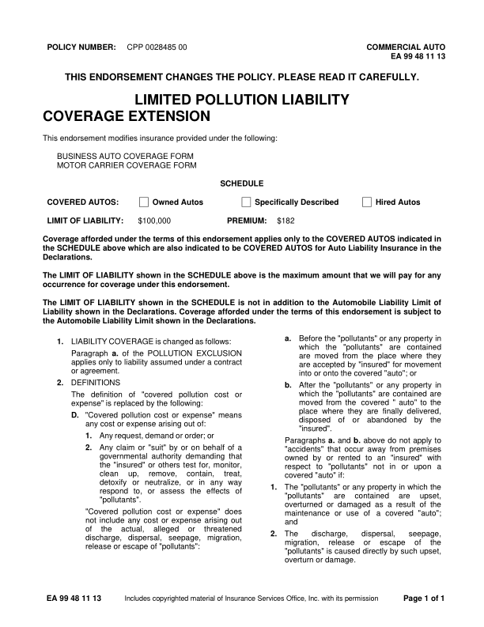
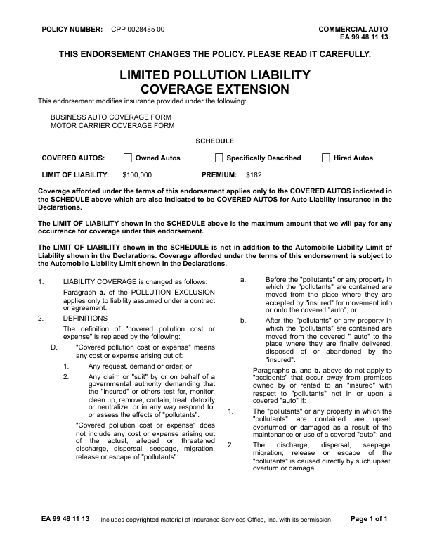
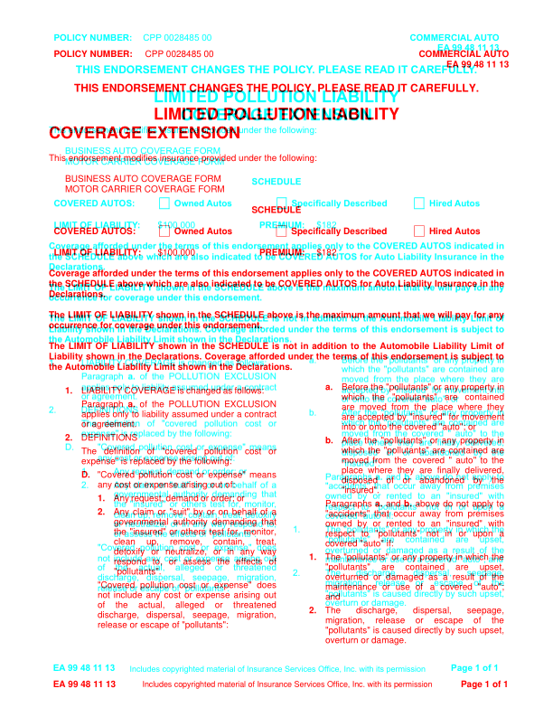

GhostDraft (TST) — page 2

HTML designer — page 2
no page
Overlay
page count differs
EA9948_1113: DIFFERENT score 99.9% pages golden 1 html 1 (pages with text) words golden 456 html 455 missing 1 extra 0 MISSING (in the GhostDraft golden, not in the HTML render) [POLLUTANTS] <= release or escape of "pollutants": golden C:\src\fact-docgen\src\Moe.Commercial.Documents.Generation.Integration.Tests\TestData\Snapshots\EA9948_1113\GoldenSnapshot.txt template C:\src\fact-poc\output\ghostdraft\batch\EA9948-1113.json serverxml C:\src\fact-poc\output\ghostdraft\serverxml\EA9948_1113\ServerXml.xml



moved POLICY (-0.0, -18.0)pt moved NUMBER: (-0.2, -18.0)pt moved CPP (-2.1, -18.0)pt moved 0028485 (-2.3, -18.0)pt moved 00 (-2.3, -18.0)pt moved COMMERCIAL (-10.0, -18.0)pt moved AUTO (-10.6, -18.0)pt moved EA (-9.9, -18.3)pt moved 99 (-10.2, -18.3)pt moved 48 (-10.2, -18.3)pt moved 11 (-10.2, -18.3)pt moved 13 (-10.8, -18.3)pt moved THIS (+1.9, -20.6)pt moved ENDORSEMENT (+1.9, -20.6)pt moved CHANGES (+1.9, -20.6)pt moved THE (+1.9, -20.6)pt moved POLICY. (+1.9, -20.6)pt moved PLEASE (+0.5, -20.6)pt moved READ (+0.5, -20.6)pt moved IT (+0.5, -20.6)pt moved CAREFULLY. (+0.5, -20.6)pt moved LIMITED (+0.0, -19.8)pt moved POLLUTION (+0.0, -19.8)pt moved LIABILITY (+0.0, -19.8)pt moved COVERAGE (+146.0, -20.2)pt moved EXTENSION (+146.0, -20.2)pt moved This (+0.0, -31.0)pt moved endorsement (-0.0, -31.0)pt moved modifies (-0.0, -31.0)pt moved insurance (-0.0, -31.0)pt moved provided (-0.0, -31.0)pt moved under (-0.0, -31.0)pt moved the (-0.0, -31.0)pt moved following: (-0.0, -31.0)pt moved BUSINESS (+0.0, -31.5)pt moved AUTO (-0.6, -31.5)pt moved COVERAGE (-0.8, -31.5)pt moved FORM (-0.8, -31.5)pt moved MOTOR (+0.0, -31.0)pt moved CARRIER (-0.2, -31.0)pt moved COVERAGE (-0.2, -31.0)pt moved FORM (-0.2, -31.0)pt moved SCHEDULE (+0.1, -31.5)pt moved COVERED (-0.0, -31.0)pt moved AUTOS: (-0.4, -31.0)pt moved Owned (+0.2, -31.0)pt moved Autos (-0.2, -31.0)pt moved Specifically (+0.2, -31.0)pt moved Described (+0.1, -31.0)pt moved Hired (+0.1, -31.0)pt moved Autos (-0.3, -31.0)pt moved LIMIT (-0.0, -30.5)pt moved OF (-0.0, -30.5)pt moved LIABILITY: (-0.0, -30.5)pt moved $100,000 (-0.0, -30.5)pt moved PREMIUM: (-0.0, -30.5)pt moved $182 (+0.0, -30.5)pt moved Coverage (+0.0, -31.0)pt moved afforded (+0.1, -31.0)pt moved under (+0.1, -31.0)pt moved the (+0.2, -31.0)pt moved terms (+0.2, -31.0)pt moved of (+0.3, -31.0)pt moved this (+0.2, -31.0)pt moved endorsement (+0.3, -31.0)pt moved applies (+0.3, -31.0)pt moved only (+0.4, -31.0)pt moved to (+0.4, -31.0)pt moved the (+0.4, -31.0)pt moved COVERED (+0.5, -31.0)pt moved AUTOS (+0.2, -31.0)pt moved indicated (-0.0, -31.0)pt moved in (+0.0, -31.0)pt moved the (+0.0, -30.5)pt moved SCHEDULE (+0.1, -30.5)pt moved above (+0.1, -30.5)pt moved which (+0.2, -30.5)pt moved are (+0.3, -30.5)pt moved also (+0.3, -30.5)pt moved indicated (+0.4, -30.5)pt moved to (+0.4, -30.5)pt moved be (+0.5, -30.5)pt moved COVERED (+0.6, -30.5)pt moved AUTOS (+0.3, -30.5)pt moved for (+0.1, -30.5)pt moved Auto (-0.2, -30.5)pt moved Liability (-0.1, -30.5)pt moved Insurance (-0.1, -30.5)pt moved in (-0.0, -30.5)pt moved the (-0.0, -30.5)pt moved Declarations. (+0.0, -30.7)pt moved The (+0.0, -30.5)pt moved LIMIT (+0.0, -30.5)pt moved OF (+0.1, -30.5)pt moved LIABILITY (+0.1, -30.5)pt moved shown (-0.1, -30.5)pt moved in (-0.1, -30.5)pt moved the (-0.0, -30.5)pt moved SCHEDULE (-0.0, -30.5)pt moved above (-0.0, -30.5)pt moved is (-0.1, -30.5)pt moved the (-0.0, -30.5)pt moved maximum (-0.0, -30.5)pt moved amount (-0.0, -30.5)pt moved that (-0.1, -30.5)pt moved we (-0.0, -30.5)pt moved will (+0.0, -30.5)pt moved pay (+0.0, -30.5)pt moved for (+0.0, -30.5)pt moved any (+0.1, -30.5)pt moved occurrence (+0.0, -30.7)pt moved for (-0.0, -30.7)pt moved coverage (-0.0, -30.7)pt moved under (-0.0, -30.7)pt moved this (-0.0, -30.7)pt moved endorsement. (-0.0, -30.7)pt moved The (+0.0, -31.2)pt moved LIMIT (+0.0, -31.2)pt moved OF (+0.1, -31.2)pt moved LIABILITY (+0.2, -31.2)pt moved shown (-0.1, -31.2)pt moved in (+0.0, -31.2)pt moved the (+0.1, -31.2)pt moved SCHEDULE (+0.1, -31.2)pt moved is (+0.1, -31.2)pt moved not (+0.1, -31.2)pt moved in (+0.2, -31.2)pt moved addition (+0.3, -31.2)pt moved to (+0.2, -31.2)pt moved the (+0.3, -31.2)pt moved Automobile (-0.1, -31.2)pt moved Liability (-0.0, -31.2)pt moved Limit (-0.0, -31.2)pt moved of (+0.1, -31.2)pt moved Liability (+0.0, -30.7)pt moved shown (-0.0, -30.7)pt moved in (+0.0, -30.7)pt moved the (+0.0, -30.7)pt moved Declarations. (+0.0, -30.7)pt moved Coverage (+0.0, -30.7)pt moved afforded (-0.0, -30.7)pt moved under (-0.0, -30.7)pt moved the (+0.1, -30.7)pt moved terms (+0.1, -30.7)pt moved of (+0.0, -30.7)pt moved this (+0.0, -30.7)pt moved endorsement (+0.0, -30.7)pt moved is (+0.0, -30.7)pt moved subject (+0.1, -30.7)pt moved to (+0.1, -30.7)pt moved the (+0.0, -31.0)pt moved Automobile (-0.4, -31.0)pt moved Liability (-0.4, -31.0)pt moved Limit (-0.4, -31.0)pt moved shown (-0.4, -31.0)pt moved in (-0.4, -31.0)pt moved the (-0.5, -31.0)pt moved Declarations. (-0.5, -31.0)pt moved a. (-18.0, -30.7)pt moved Before (+0.0, -30.7)pt moved the (+0.0, -30.7)pt moved "pollutants" (+0.0, -30.7)pt moved or (+0.1, -30.7)pt moved any (+0.1, -30.7)pt moved property (+0.1, -30.7)pt moved in (+0.0, -30.7)pt moved 1. (-17.9, -30.9)pt moved LIABILITY (-0.0, -30.9)pt moved COVERAGE (+0.5, -30.9)pt moved is (+1.0, -30.9)pt moved changed (+1.4, -30.9)pt moved as (+1.9, -30.9)pt moved follows: (+2.4, -30.9)pt moved which (+0.0, -31.2)pt moved the (-4.6, -31.2)pt moved "pollutants" (-9.1, -31.2)pt moved are (-13.6, -31.2)pt moved contained (-18.1, -31.2)pt moved Paragraph (-0.0, -30.9)pt moved a. (+0.1, -30.9)pt moved of (+0.1, -30.9)pt moved the (+0.0, -30.9)pt moved POLLUTION (+0.1, -30.9)pt moved EXCLUSION (+0.0, -30.9)pt moved moved (-19.7, -30.9)pt moved from (-19.6, -30.9)pt moved the (-19.7, -30.9)pt moved place (-19.7, -30.9)pt moved where (-19.6, -30.9)pt moved they (-19.6, -30.9)pt moved applies (-0.0, -30.7)pt moved only (+0.0, -30.7)pt moved to (-0.0, -30.7)pt moved liability (+0.1, -30.7)pt moved assumed (+0.1, -30.7)pt moved under (+0.1, -30.7)pt moved a (+0.0, -30.7)pt moved contract (+0.0, -30.7)pt moved accepted (-17.6, -30.7)pt moved by (-17.9, -30.7)pt moved "insured" (-18.3, -30.7)pt moved for (-18.7, -30.7)pt moved movement (-19.0, -30.7)pt moved or (-0.0, -31.2)pt moved agreement. (+0.0, -31.2)pt moved or (-18.9, -31.2)pt moved onto (-18.9, -31.2)pt moved the (-18.9, -31.2)pt moved covered (-18.9, -31.2)pt moved "auto"; (-18.9, -31.2)pt moved or (-18.9, -31.2)pt moved 2. (-17.9, -31.2)pt moved DEFINITIONS (-0.0, -31.2)pt moved b. (-18.0, -31.2)pt moved After (+0.0, -31.2)pt moved the (+0.1, -31.2)pt moved "pollutants" (+0.1, -31.2)pt moved or (+0.0, -31.2)pt moved any (+0.1, -31.2)pt moved property (+0.1, -31.2)pt moved in (+0.0, -31.2)pt moved The (-0.0, -31.2)pt moved definition (+0.1, -31.2)pt moved of (+0.0, -31.2)pt moved "covered (-0.0, -31.2)pt moved pollution (-0.1, -31.2)pt moved cost (-0.0, -31.2)pt moved or (+0.0, -31.2)pt moved which (+0.0, -30.9)pt moved the (+0.0, -30.9)pt moved "pollutants" (+0.0, -30.9)pt moved are (+0.1, -30.9)pt moved contained (+0.0, -30.9)pt moved are (+0.0, -30.9)pt moved moved (+0.0, -30.7)pt moved from (+0.3, -30.7)pt moved the (+0.6, -30.7)pt moved covered (-1.1, -30.7)pt moved " (-0.8, -30.7)pt moved auto" (-0.5, -30.7)pt moved to (-0.3, -30.7)pt moved the (+0.1, -30.7)pt moved place (+0.0, -31.2)pt moved where (+0.0, -31.2)pt moved they (+0.1, -31.2)pt moved are (+0.1, -31.2)pt moved finally (+0.1, -31.2)pt moved delivered, (+0.1, -31.2)pt moved D. (-18.0, -30.9)pt moved "Covered (+0.1, -30.9)pt moved pollution (+0.2, -30.9)pt moved cost (+0.1, -30.9)pt moved or (+0.1, -30.9)pt moved expense" (+0.1, -30.9)pt moved means (+0.1, -30.9)pt moved disposed (+0.0, -30.9)pt moved of (+0.1, -30.9)pt moved or (+0.1, -30.9)pt moved abandoned (+0.1, -30.9)pt moved by (+0.1, -30.9)pt moved the (+0.1, -30.9)pt moved any (+0.0, -30.7)pt moved cost (+0.0, -30.7)pt moved or (+0.0, -30.7)pt moved expense (+0.0, -30.7)pt moved arising (+0.0, -30.7)pt moved out (+0.0, -30.7)pt moved of: (+0.0, -30.7)pt moved "insured". (+0.0, -30.7)pt moved 1. (-17.9, -30.7)pt moved Any (+0.0, -30.7)pt moved request, (+0.8, -30.7)pt moved demand (+1.2, -30.7)pt moved or (+1.6, -30.7)pt moved order; (+1.8, -30.7)pt moved or (+2.2, -30.7)pt moved Paragraphs (+0.0, -30.7)pt moved a. (+0.1, -30.7)pt moved and (-0.0, -30.7)pt moved b. (+0.1, -30.7)pt moved above (+0.0, -30.7)pt moved do (+0.1, -30.7)pt moved not (+0.1, -30.7)pt moved apply (+0.1, -30.7)pt moved to (+0.0, -30.7)pt moved 2. (-18.0, -30.7)pt moved Any (+0.1, -30.7)pt moved claim (+0.1, -30.7)pt moved or (+0.2, -30.7)pt moved "suit" (+0.1, -30.7)pt moved by (+0.1, -30.7)pt moved or (+0.0, -30.7)pt moved on (+0.1, -30.7)pt moved behalf (+0.1, -30.7)pt moved of (+0.1, -30.7)pt moved a (+0.0, -30.7)pt moved "accidents" (+0.0, -31.2)pt moved that (+0.1, -31.2)pt moved occur (+0.1, -31.2)pt moved away (+0.0, -31.2)pt moved from (+0.0, -31.2)pt moved premises (+0.0, -31.2)pt moved governmental (+0.0, -31.2)pt moved authority (+0.0, -31.2)pt moved demanding (+0.1, -31.2)pt moved that (+0.0, -31.2)pt moved owned (+0.0, -30.9)pt moved by (+0.1, -30.9)pt moved or (+0.1, -30.9)pt moved rented (+0.1, -30.9)pt moved to (+0.1, -30.9)pt moved an (+0.1, -30.9)pt moved "insured" (+0.1, -30.9)pt moved with (+0.0, -30.9)pt moved the (+0.0, -30.9)pt moved "insured" (+0.2, -30.9)pt moved or (+0.4, -30.9)pt moved others (+0.6, -30.9)pt moved test (+0.8, -30.9)pt moved for, (+0.9, -30.9)pt moved monitor, (+0.6, -30.9)pt moved respect (+0.0, -30.7)pt moved to (+0.0, -30.7)pt moved "pollutants" (+0.0, -30.7)pt moved not (+0.1, -30.7)pt moved in (+0.1, -30.7)pt moved or (+0.0, -30.7)pt moved upon (+0.1, -30.7)pt moved a (+0.0, -30.7)pt moved clean (+0.0, -30.7)pt moved up, (-9.3, -30.7)pt moved remove, (-18.6, -30.7)pt moved contain, (-27.9, -30.7)pt moved treat, (-37.2, -30.7)pt moved covered (+0.0, -31.2)pt moved "auto" (-0.0, -31.2)pt moved if: (-0.0, -31.2)pt moved or (-41.3, -31.2)pt moved neutralize, (-44.2, -31.2)pt moved or (-47.2, -31.2)pt moved in (-49.9, -31.2)pt moved any (-52.6, -31.2)pt moved way (-55.0, -31.2)pt moved 1. (-18.0, -31.2)pt moved The (+0.1, -31.2)pt moved "pollutants" (+0.1, -31.2)pt moved or (+0.2, -31.2)pt moved any (+0.1, -31.2)pt moved property (+0.0, -31.2)pt moved in (+0.1, -31.2)pt moved which (+0.1, -31.2)pt moved the (+0.1, -31.2)pt moved or (-60.8, -30.9)pt moved assess (-64.8, -30.9)pt moved the (-68.9, -30.9)pt moved effects (-72.9, -30.9)pt moved of (-77.4, -30.9)pt moved "pollutants" (+0.0, -30.9)pt moved are (+0.0, -30.9)pt moved contained (+0.0, -30.9)pt moved are (+0.0, -30.9)pt moved upset, (+0.1, -30.9)pt moved overturned (+0.0, -30.7)pt moved or (+0.0, -30.7)pt moved damaged (+0.1, -30.7)pt moved as (+0.0, -30.7)pt moved a (+0.0, -30.7)pt moved result (+0.1, -30.7)pt moved of (+0.1, -30.7)pt moved the (+0.1, -30.7)pt moved not (+0.0, -41.7)pt moved include (+0.0, -41.7)pt moved any (+0.0, -41.7)pt moved cost (+0.0, -41.7)pt moved or (+0.1, -41.7)pt moved expense (+0.1, -41.7)pt moved arising (+0.1, -41.7)pt moved out (+0.1, -41.7)pt moved and (+180.5, -42.2)pt moved of (+0.0, -42.2)pt moved the (+0.1, -42.2)pt moved actual, (+0.0, -42.2)pt moved alleged (+0.1, -42.2)pt moved or (+0.0, -42.2)pt moved threatened (+0.1, -42.2)pt moved 2. (-18.0, -42.2)pt moved The (+0.1, -42.2)pt moved discharge, (+0.1, -42.2)pt moved dispersal, (+0.0, -42.2)pt moved seepage, (+0.1, -42.2)pt moved discharge, (+0.0, -41.9)pt moved dispersal, (+0.1, -41.9)pt moved seepage, (+0.0, -41.9)pt moved migration, (+0.1, -41.9)pt moved migration, (+0.0, -41.9)pt moved release (+0.0, -41.9)pt moved or (+0.0, -41.9)pt moved escape (+0.0, -41.9)pt moved of (+0.1, -41.9)pt moved the (+0.1, -41.9)pt moved release (+0.0, -41.7)pt moved or (+0.0, -41.7)pt moved escape (+0.0, -41.7)pt moved of (+0.0, -41.7)pt moved "pollutants": (+0.0, -41.7)pt moved "pollutants" (+0.0, -41.7)pt moved is (+0.1, -41.7)pt moved caused (-0.0, -41.7)pt moved directly (-0.0, -41.7)pt moved by (-0.1, -41.7)pt moved such (+0.0, -41.7)pt moved upset, (+0.1, -41.7)pt moved overturn (+0.0, -42.2)pt moved or (+0.0, -42.2)pt moved damage. (+0.0, -42.2)pt moved EA (-0.0, -19.0)pt moved 99 (-0.4, -19.0)pt moved 48 (-0.4, -19.0)pt moved 11 (-0.4, -19.0)pt moved 13 (-0.9, -19.0)pt moved Includes (-14.0, -18.0)pt moved copyrighted (-13.3, -18.0)pt moved material (-12.3, -18.0)pt moved of (-11.6, -18.0)pt moved Insurance (-11.3, -18.0)pt moved Services (-10.5, -18.0)pt moved Office, (-9.8, -18.0)pt moved Inc. (-9.4, -18.0)pt moved with (-9.0, -18.0)pt moved its (-8.7, -18.0)pt moved permission (-8.4, -18.0)pt moved Page (-10.8, -19.0)pt moved 1 (-10.7, -19.0)pt moved of (-10.8, -19.0)pt moved 1 (-10.8, -19.0)pt size a. 9.9 -> 10.0pt size 1. 9.9 -> 10.0pt size 2. 9.9 -> 10.0pt size b. 9.9 -> 10.0pt size D. 9.9 -> 10.0pt size 1. 9.9 -> 10.0pt size 2. 9.9 -> 10.0pt size 1. 9.9 -> 10.0pt size 2. 9.9 -> 10.0pt missing h rule at 249.7 (176.6-187.1) missing h rule at 249.7 (306.3-316.7) missing h rule at 249.7 (458.8-469.2) missing h rule at 261.7 (176.6-187.1) missing h rule at 261.7 (306.3-316.7) missing h rule at 261.7 (458.8-469.2) missing v rule at 176.4 (249.9-261.4) missing v rule at 187.3 (249.9-261.4) missing v rule at 306.0 (249.9-261.4) missing v rule at 316.9 (249.9-261.4) missing v rule at 458.6 (249.9-261.4) missing v rule at 469.5 (249.9-261.4) extra h rule at 218.6 (177.0-187.5) extra h rule at 218.6 (306.8-317.2) extra h rule at 218.6 (459.0-469.5) extra h rule at 230.6 (177.0-187.5) extra h rule at 230.6 (306.8-317.2) extra h rule at 230.6 (459.0-469.5) extra v rule at 176.6 (218.2-231.0) extra v rule at 187.1 (218.2-231.0) extra v rule at 306.4 (218.2-231.0) extra v rule at 316.9 (218.2-231.0) extra v rule at 458.6 (218.2-231.0) extra v rule at 469.1 (218.2-231.0)